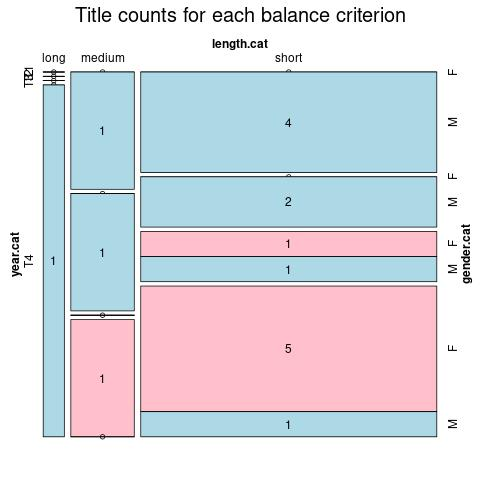

Click on a column heading to sort. Click on a text identifier to read the text (may not work in older browsers).
| Identifier | Encoding | Pages | Words | (Size) | Date (Slot) | Title | Author | Sex | Reprints |
|---|---|---|---|---|---|---|---|---|---|
| LIT00001 |
eltec-1 | 255 | 39517 | (long) !! | 1913 (T4) | Kuprelis | Šeinius, Ignas (1889-1959) | M | high |
| LIT00005 |
eltec-1 | 207 | 20455 | (short) | 1941 (T1) | Žemaičių pasakos | Daukantas, Simonas (1793-1864) | M | high |
| LIT00007 |
eltec-1 | 100 | 17940 | (short) | 1868 (T2) | Wajku kningiele | Valančius, Motiejus (1801-1875) | M | high |
| LIT00008 |
eltec-1 | 77 | 21735 | (short) | 1899 (T4) | Keidoszių Onutė | Pietaris, Vincas (1850-1902) | M | low |
| LIT00010 |
eltec-1 | 520 | 65961 | (medium) | 1909 (T4) | Klaida | Pšibiliauskienė, Sofija (1867-1926) | F | low |
| LIT00011 |
eltec-1 | 102 | 11913 | (short) | 1899 (T3) | Paveikslai | Žemaitė (1845-1921) | F | low |
| LIT00014 |
eltec-1 | 252 | 58164 | (medium) | 1845 (T1) | Budą senowęs-lëtuwiû kalnienû ir źamajtiû | Daukantas, Simonas (1793-1864) | M | high |
| LIT00015 |
eltec-1 | 149 | 28167 | (short) | 1851 (T1) | Pamoksłaj iszminties ir tejsibes iszguldineti priliginimajs gałwocziu wisu amziu deł Lietuwos wajkielu | Tatarė, Antanas (1805-1889) | M | high |
| LIT00016 |
eltec-1 | 146 | 29344 | (short) | 1868 (T2) | Paaugusiu žmonių kningiele | Valančius, Motiejus (1801-1875) | M | low |
| LIT00017 |
eltec-1 | 55 | 13309 | (short) | 1891 (T3) | Apie senoves Lietuvos pylis | Basanavičius, Jonas (1851-1927) | M | low |
| LIT00021 |
eltec-1 | 127 | 14246 | (short) | 1853 (T1) | Apłankimas seniuka dieł brolu żemajcziu ir lietuviu | Gomaliauskis, Petras (1820-1968) | M | low |
| LIT00023 |
eltec-1 | 280 | 43081 | (short) | 1858 (T1) | Źiwataj szwętuju | Valančius, Motiejus (1801-1875) | M | low |
| LIT00024 |
eltec-1 | 292 | 67608 | (medium) | 1868 (T2) | Giwenimaj szwentuju Diewa | Valančius, Motiejus (1801-1875) | M | low |
| LIT00025 |
eltec-1 | 90 | 26397 | (short) | 1903 (T4) | Viktutė | Šatrijos Ragana (1877-1930) | F | low |
| LIT00025 |
eltec-1 | 69 | 10197 | (short) | 1919 (T4) | Ir aš mažas buvau | Pranas Mašiotas (1863-1940) | F | low |
| LIT00025 |
eltec-1 | 62 | 11040 | (short) | 1902 (T4) | Našlaitė | Lazdynų Pelėda (Sofija Pšibiliauskienė) (1867-1926) | F | low |
| LIT00026 |
eltec-1 | 35 | 11260 | (short) | 1907 (T4) | Dėl tėvynės | Šatrijos Ragana (1877-1930) | F | low |
| LIT00027 |
eltec-1 | 148 | 26221 | (short) | 1906 (T4) | Vincas Stonis | Šatrijos Ragana (1877-1930) | F | low |